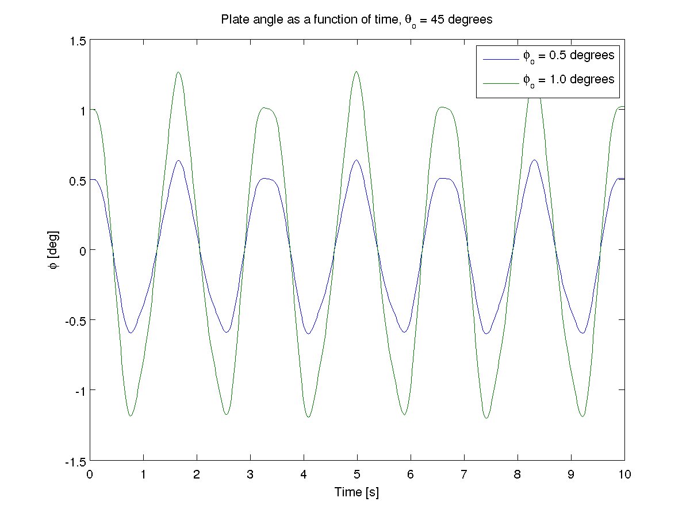
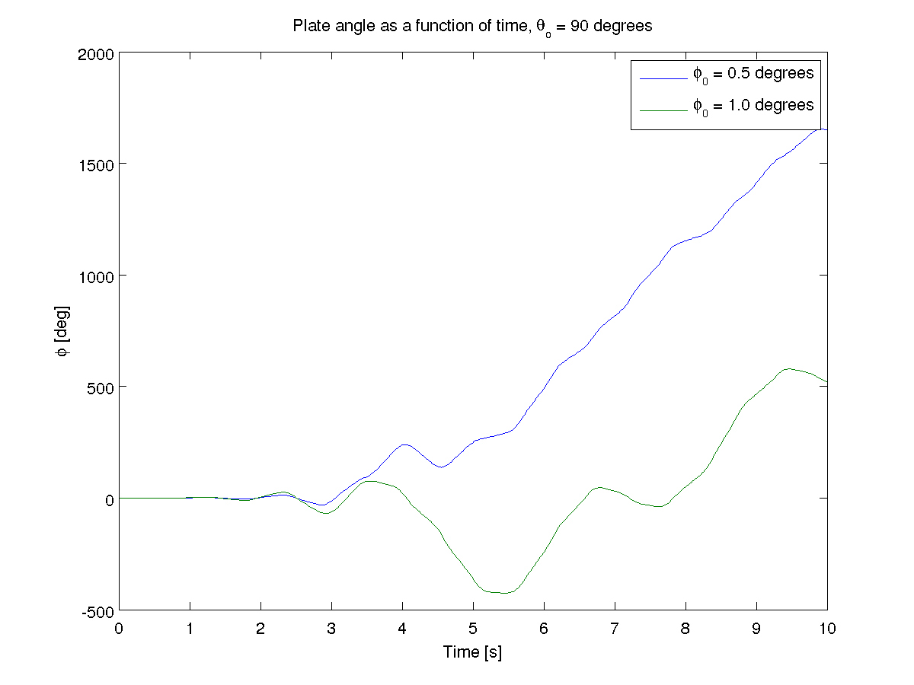

This example is a demonstration of a dynamical system that exhibits chaos. It
is a simple pendulum with a rotating flat plate in place of the bob. There are
two rigid bodies. The first is a uniform rod which rotates by its end about a
horizontal axis. The second rigid body is a thin plate which rotates about the
rod’s axis. The bodies are suspended in a uniform gravitational field. The rod,
\(A\), has a simple rotation about the Newtonian \(\hat{n}_2\) axis and
the flat plate, \(B\), rotates about the rod’s \(\hat{a}_3\) axis. The
mass center of the rod is \(l_A\) from the origin and the flat plate is
length, \(l_B\) from the origin. The plate has mass \(m_B\), and is
symmetric about each axis. The first step is to transfer the equations of motion from SymPy into a
function in Matlab. The pendulum is an interesting system. It is very sensitive to initial
conditions. Changing \(\phi\) slightly when \(\theta\) is at different
angles shows that the system is very unpredictable.  A Chaotic Pendulum Example¶
System Description¶
Generate the equations of motion with sympy¶
#!/usr/bin/env python
# This script generates the equations of motion for a double pendulum where the
# bob rotates about the pendulum rod. It can be shown to be chaotic when
# simulated.
# import sympy and the mechanics module
import sympy as sym
import sympy.physics.mechanics as me
# declare the constants #
# gravity
gravity = sym.symbols('g')
# center of mass length, mass and moment of inertia of the slender rod
lA, mA, IAxx = sym.symbols('lA mA IAxx')
# center of mass length, mass and moment of inertia of the plate
lB, mB, IBxx, IByy, IBzz = sym.symbols('lB mB IBxx IByy IBzz')
## kinematics ##
# declare the coordinates and speeds and their derivatives #
# theta : angle of the rod
# phi : angle of the plate relative to the rod
# omega : angular speed of the rod
# alpha : angular speed of the plate
theta, phi, omega, alpha = me.dynamicsymbols('theta phi omega alpha')
thetad, phid, omegad, alphad = me.dynamicsymbols('theta phi omega alpha', 1)
# reference frames #
# create a Newtonian reference frame
N = me.ReferenceFrame('N')
# create a reference for the rod, A, and the plate, B
A = me.ReferenceFrame('A')
B = me.ReferenceFrame('B')
# orientations #
# the rod rotates with respect to the Newtonian reference frame about the 2
# axis
A.orient(N, 'Axis', [theta, N.y])
# the plate rotates about the rod's primay axis
B.orient(A, 'Axis', [phi, A.z])
# positions #
# origin of the Newtonian reference frame
No = me.Point('No')
# create a point for the mass centers of the two bodies
Ao = me.Point('Ao')
Bo = me.Point('Bo')
# define the positions of the mass centers relative to the Newtonian origin
Ao.set_pos(No, lA * A.z)
Bo.set_pos(No, lB * A.z)
# angular velocities and accelerations #
A.set_ang_vel(N, omega * N.y)
B.set_ang_vel(A, alpha * A.z)
# take the derivative of the angular velocities to get angular accelerations
A.set_ang_acc(N, A.ang_vel_in(N).dt(N))
B.set_ang_acc(N, B.ang_vel_in(N).dt(N))
# linear velocities and accelerations #
No.set_vel(N, 0) # the newtonian origin is fixed
Ao.set_vel(N, omega * lA * A.x)
Ao.a2pt_theory(No, N, A)
Bo.set_vel(N, omega * lB * A.x)
Bo.a2pt_theory(No, N, A)
# kinematical differential equations #
kinDiffs = [omega - thetad, alpha - phid]
## kinetics ##
# rigid bodies #
rod = me.RigidBody('rod', Ao, A, mA, (me.inertia(A, IAxx, IAxx, 0.0), Ao)) # create the empty rod object
plate = me.RigidBody('plate', Bo, B, mB, (me.inertia(B, IBxx, IByy, IBzz), Bo)) # create the empty plate object
## equations of motion with Kane's method ##
# make a list of the bodies
bodyList = [rod, plate]
# forces #
# add the gravitional force to each body
forceList = [(Ao, N.z * gravity * mA),
(Bo, N.z * gravity * mB)]
# create a Kane object with respect to the Newtonian reference frame
kane = me.KanesMethod(N, q_ind=[theta, phi], u_ind=[omega, alpha], kd_eqs=kinDiffs)
# calculate Kane's equations
fr, frstar = kane.kanes_equations(forceList, bodyList)
zero = fr + frstar
# solve Kane's equations for the derivatives of the speeds
eom = sym.solvers.solve(zero, omegad, alphad)
# add the kinematical differential equations to get the equations of motion
eom.update(kane.kindiffdict())
# print the results
me.mprint(eom)
Integration with Matlab¶
function xd = state_derivatives(t, x, p)
%function xd = state_derivatives(t, x, p)
% Returns the derivatives of the states as a function of the current state
% and time.
%
% Parameters
% ----------
% t : double
% Current time.
% x : vector, (4, 1)
% Current state [theta, phi, omega, alpha].
%
% Returns
% -------
% xd : matrix, 4 x 1
% The derivative of the current state.
% Unpack the variables so that you can use the sympy equations as is.
theta = x(1);
phi = x(2);
omega = x(3);
alpha = x(4);
% Initialize a vector for the derivatives.
xd = zeros(4, 1);
% Calculate the derivatives of the states. These equations can be copied
% directly from the sympy output but be sure to print with `mprint` in
% sympy.physics.mechanics to remove the `(t)` and use Matlab's find and
% replace to change the python `**` to the matlab `^`. Also note that the
% structure `p` was used to pass in the parameters and each parameter must
% be prepended with `p.`.
% theta'
xd(1) = omega;
% phi'
xd(2) = alpha;
% omega'
xd(3) = (-2 * p.IBxx * alpha * omega * sin(phi) * cos(phi) + 2 * ...
p.IByy * alpha * omega * sin(phi) * cos(phi) - p.g * p.lA * p.mA * ...
sin(theta) - p.g * p.lB * p.mB * sin(theta)) / (p.IAxx + p.IBxx * ...
sin(phi)^2 + p.IByy * cos(phi)^2 + p.lA^2 * p.mA + p.lB^2 * p.mB);
% alpha'
xd(4) = (p.IBxx - p.IByy) * omega^2 * sin(phi) * cos(phi) / p.IBzz;
Results from Matlab¶
{kind=link}
{kind=link}